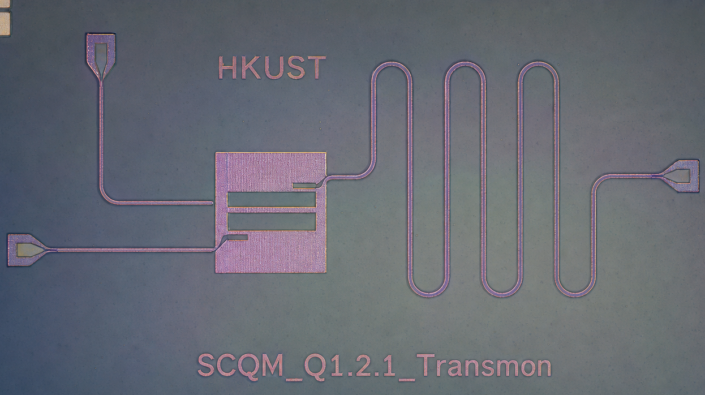
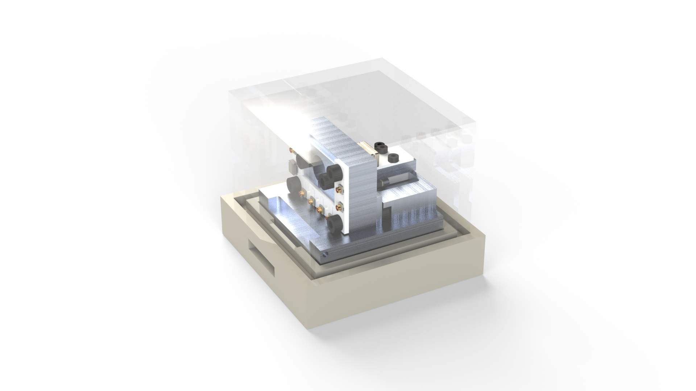
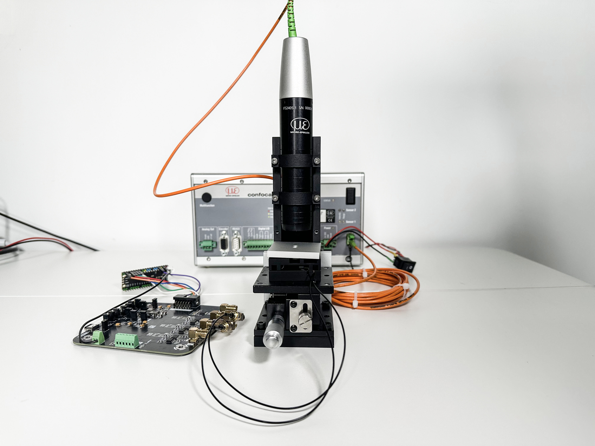
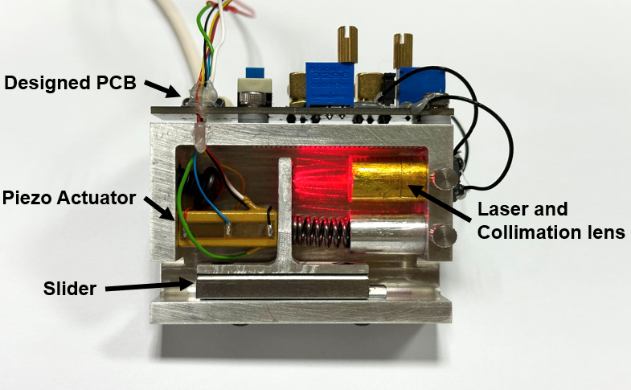
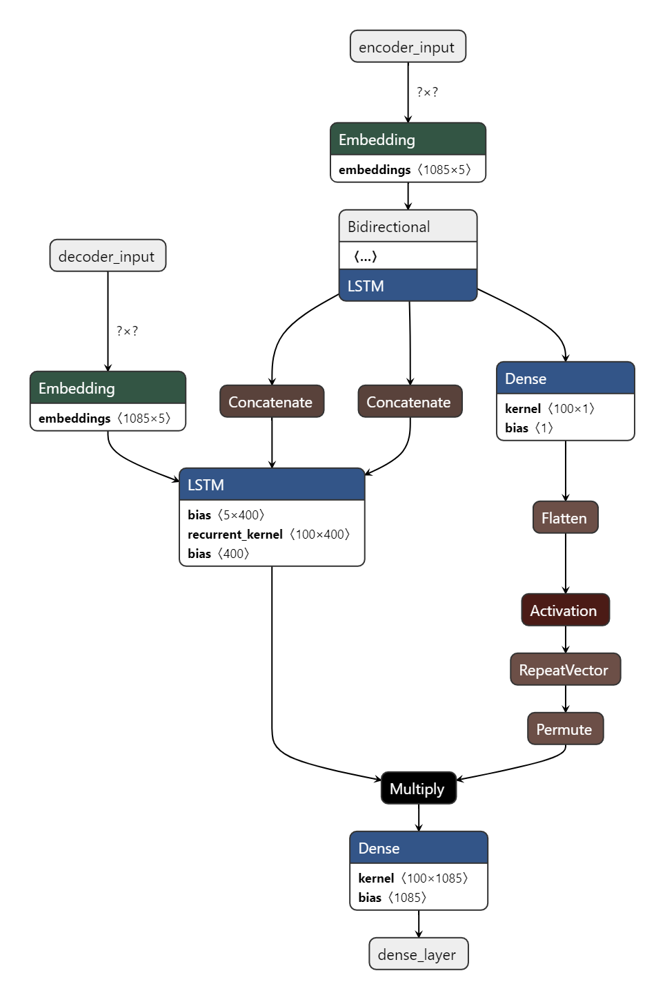

超导电荷量子比特显微镜
正在开发中的量子传感平台。
开发一种基于超导电荷量子比特的量子显微镜原型，用于纳米尺度传感。 目前的研究工作包括超导电荷量子比特设计、电磁仿真、低温扫描显微镜架构、 微波电路设计以及原型系统集成。
创客 · 中国科学院大学工学硕士 · 香港科技大学博士研究生
致力于打造经济实惠、开放共享的纳米测量与量子传感科学仪器。
马维林是一名创客，拥有中国科学院大学电子信息专业工学硕士学位。 目前，他正在香港科技大学攻读物理学博士学位。 他的研究重点是低成本科学仪器的开发，代表性项目包括 OpenSTM 和微型轮廓仪。 博士期间，他在 Berthold Jaeck 教授的指导下开展超导电荷量子比特显微镜 （Superconducting Charge Qubit Microscopy，SCQM）的原型开发工作。
研究方向： 量子传感、扫描探针显微技术、低成本替代型科学仪器
物理学博士研究生
电子信息专业工学硕士
电子信息工程专业工学学士

正在开发中的量子传感平台。
开发一种基于超导电荷量子比特的量子显微镜原型，用于纳米尺度传感。 目前的研究工作包括超导电荷量子比特设计、电磁仿真、低温扫描显微镜架构、 微波电路设计以及原型系统集成。

一款制造成本约为 300 美元（人民币 2,000 元）的低成本扫描隧道显微镜。
OpenSTM 是一款开源、低成本的扫描隧道显微镜。
系统的最大工作电压为 ±15 V，并集成了针尖逼近算法，
能够在一分钟内建立隧穿电流，特别适合教学和科普用途。
下方图片展示了 OpenSTM 对高定向热解石墨（HOPG）样品的扫描结果。

一款基于共焦位移传感器的轮廓测量仪。
本项目开发了一款分辨率为 100 nm 的二维压电电机。
系统集成共焦位移传感器后，可以测量样品的表面轮廓，
深度分辨率达到 38 nm，XY 平面分辨率达到 8 µm。
下方图片展示了芯片裸片和阳极氧化铝样品的测量结果。

一款经过分辨率改进、基于自混合干涉技术（SMI）的低成本压电材料位移传感器。
本项目开发了一款基于自混合干涉技术的压电材料位移传感器。 与原始 SMI 传感器相比，所提出的数据融合算法使均方根误差降低了 30.1%，最大误差降低了 45.5%，最终实现了 120.7 nm 的测量精度和 45 nm 的均方根误差。其分辨率达到 22 nm，而原始 SMI 传感器的 分辨率为 327.5 nm。

自定义文本到文本聊天机器人。
该聊天机器人采用编码器—解码器文本生成模型。 编码器使用双向长短期记忆网络（BiLSTM）， 解码器使用带有注意力机制的长短期记忆网络（LSTM）。 机器人可以学习群聊历史记录，并在完成训练后与用户进行对话。
提示：点击任意图片即可在新标签页中查看大图。
我会在这里分享研究笔记和项目总结： 访问我的博客